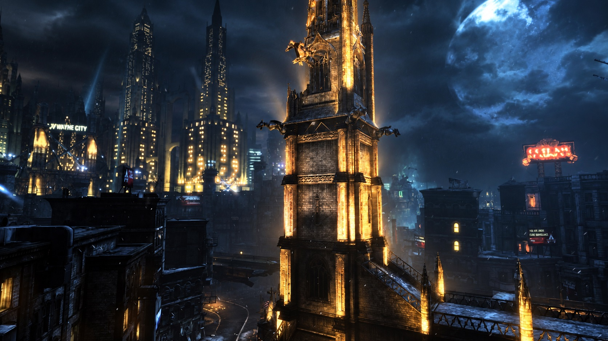

Catedral de Gotham
Una visita imprescindible para descubrir la arquitectura gótica y el patrimonio histórico de Old Gotham con su impredecible arquitectura.
Leer más
La Catedral de Gotham es uno de los edificios más emblemáticos de la ciudad. Sus enormes vitrales, sus altas torres y su imponente arquitectura ofrecen una de las postales más características del distrito histórico.
Situada en el corazón de Old Gotham, ha sobrevivido a décadas de conflictos y transformaciones urbanas, convirtiéndose en un símbolo de la resiliencia de la ciudad.